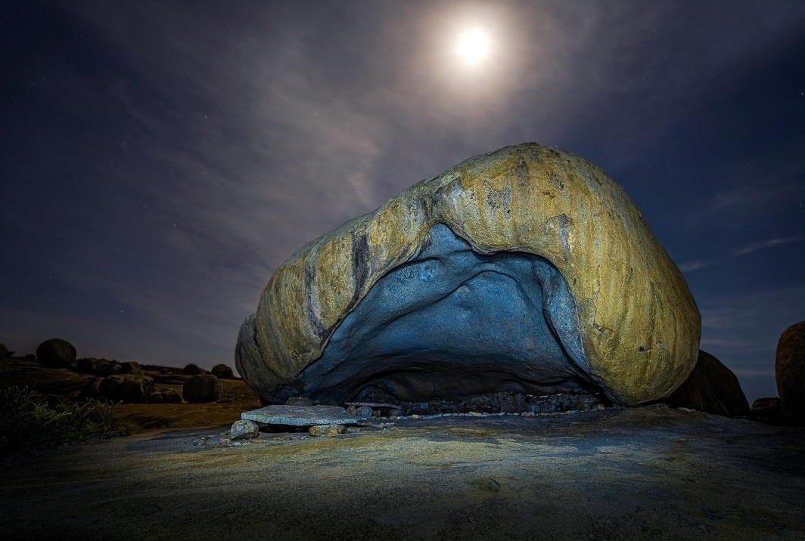
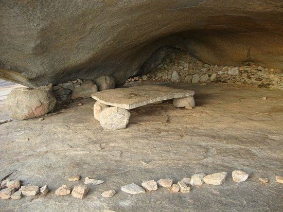
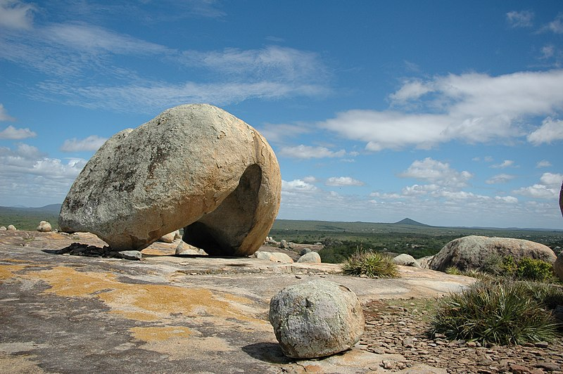
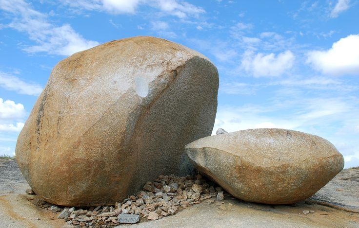
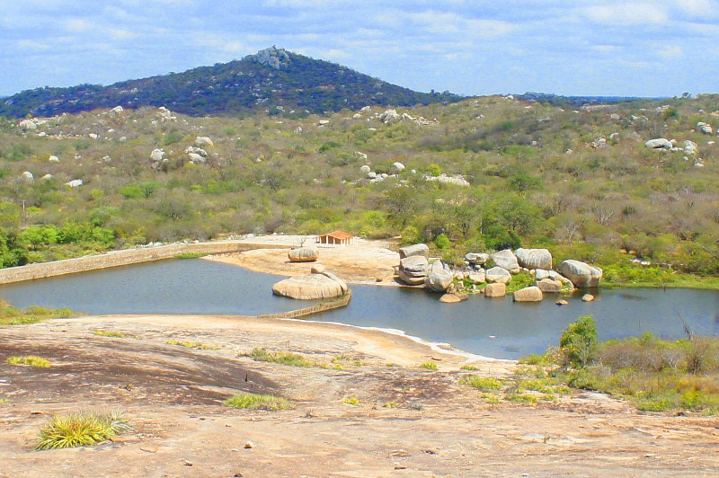
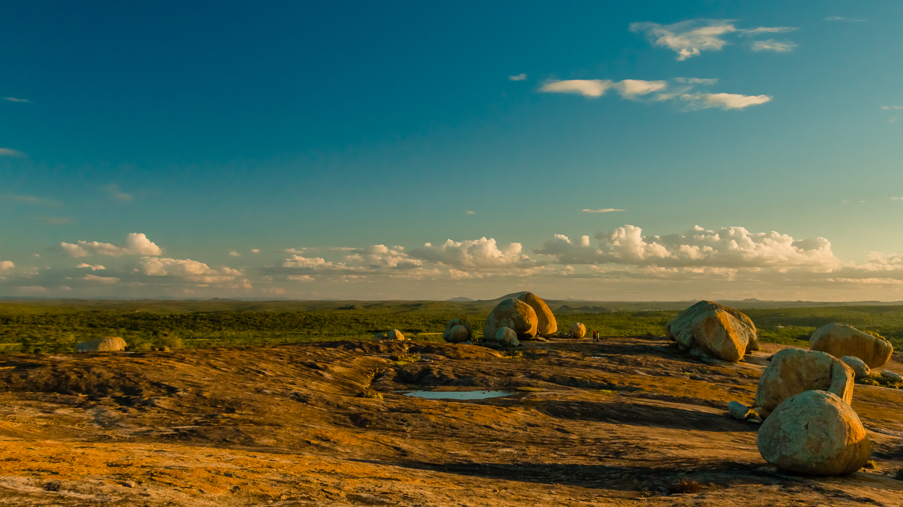
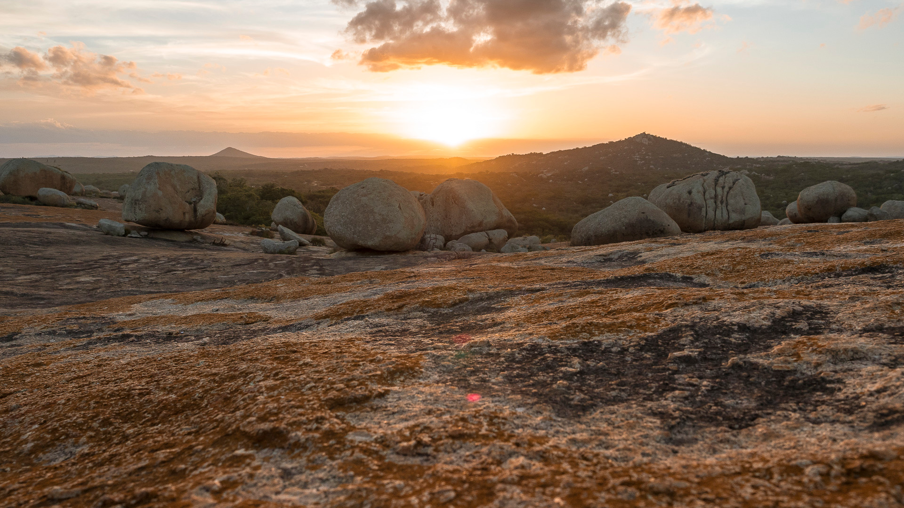
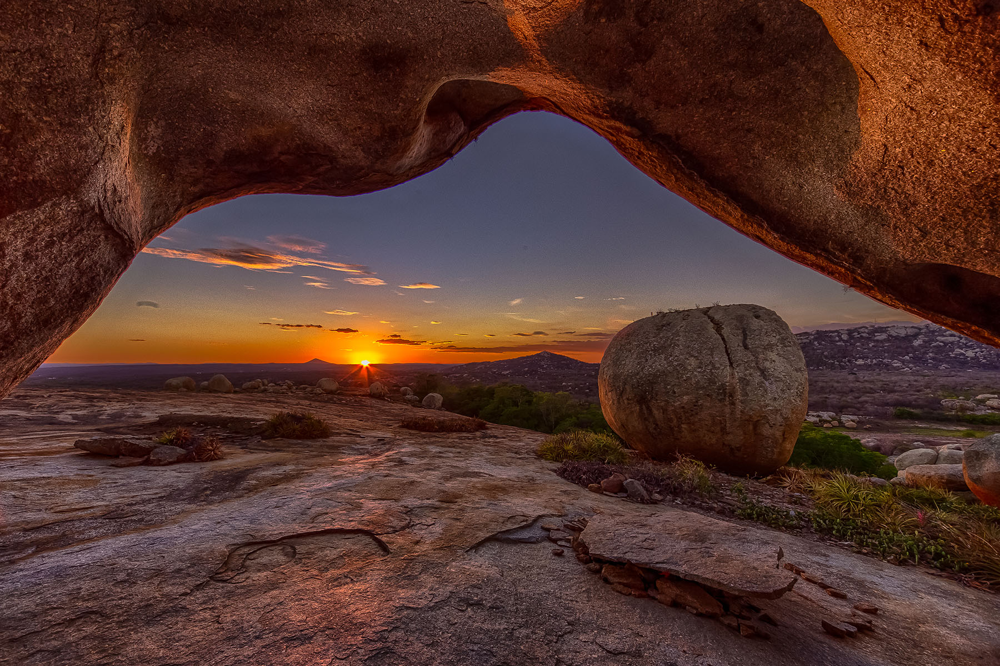

VENHA SIMBORA CONHECER ESSE LUGAR ARRETADO NO CARIRI PARAIBANO!
O Lajedo de Pai Mateus é uma elevação rochosa localizada na zona rural de Cabaceiras,
no estado da Paraíba, Brasil. Tem aproximadamente 1,5 km² e cerca de cem grandes pedras arredondadas que se destacam sobre a superfície ligeiramente convexa e a vegetação escassa da região do Cariri Paraibano.
OXE, E PORQUE O NOME PAI MATEUS?
O nome "Pai Mateus" faz referência a um curandeiro ermitão que a tradição oral diz ter habitado o Lajedo em meados do Século XVIII. Diz a lenda que o mesmo morava numa grande espécie de gruta, chamada de casa de Pai Mateus. Nas paredes do grande abrigo rochoso, encontramos várias dezenas de impressões de mãos humanas.
 JÁ VISSE AS PEDRAS QUE TEM LÁ?
Pedra do CAPACETE
Chamada assim pela semelhança a um capacete.
Pedra do SINO
Conhecida pelo barulho semelhante a um sino ao bater nela com uma outra pedra.
ESPIA SÓ CADA VISTA QUE TU VAI VÊ!!!
O lajedo nos proporciona belas vistas inclusive no finzinho da tarde tem um exuberante por-do-sol pra fechar com chave de ouro o seu passeio.
   CUIDA! PERDE TEMPO NÃO E VEM CONHECER LOGO, TU VAI FICAR BESTINHA!!!